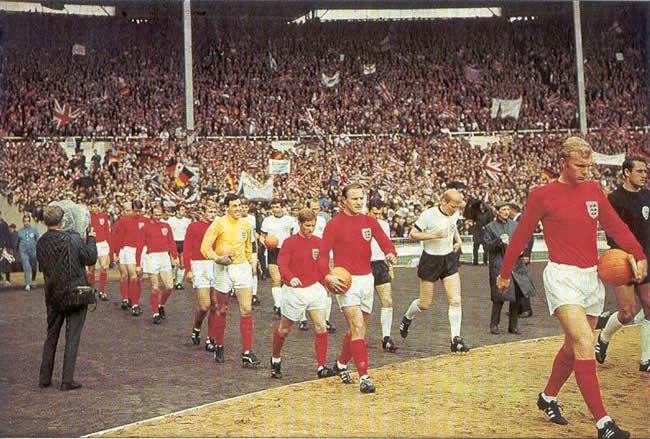
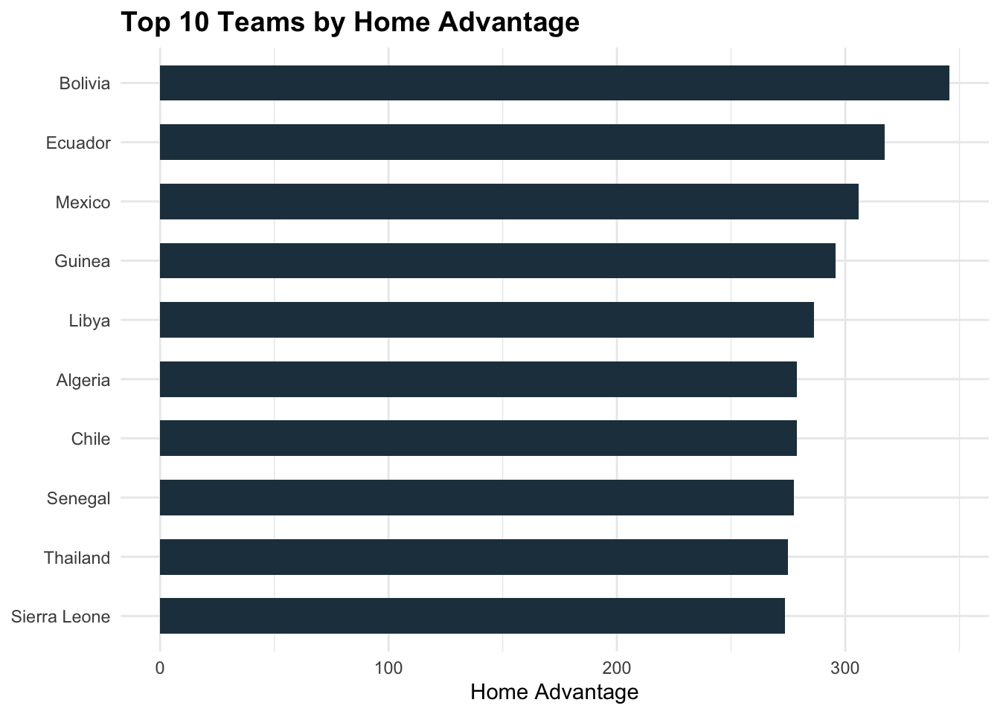
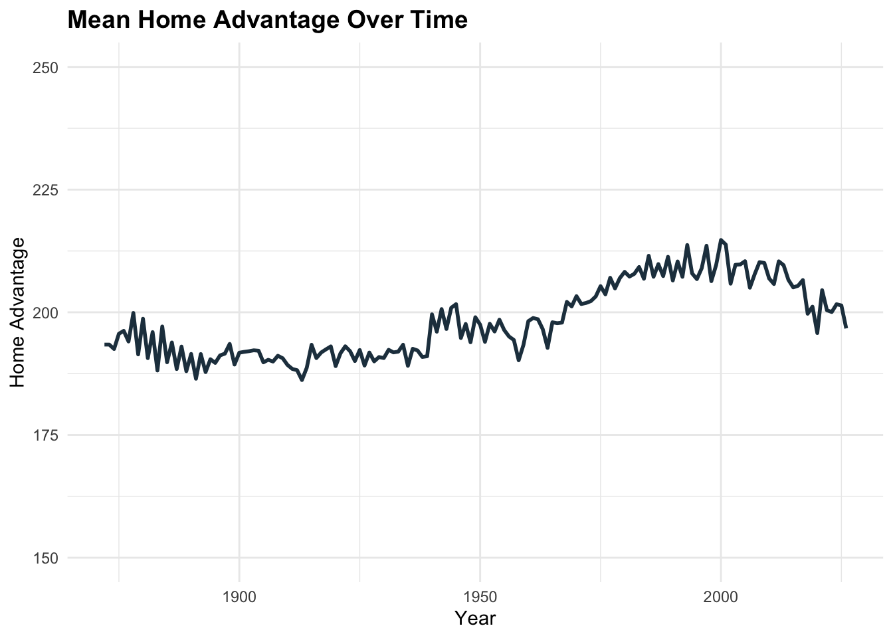
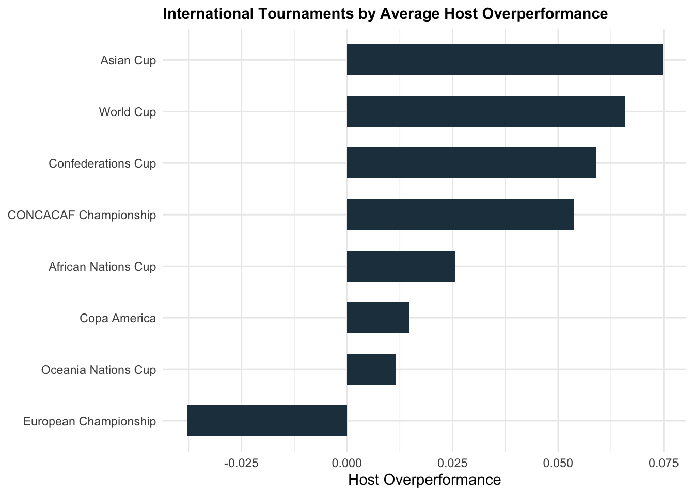

| Top 10 International Football Teams | ||
| 21 Apr, 2026 | ||
| Rank | eloratings.net | My Model |
|---|---|---|
| 1 | Spain | Spain |
| 2 | Argentina | Argentina |
| 3 | France | France |
| 4 | England | Brazil |
| 5 | Brazil | England |
| 6 | Portugal | Portugal |
| 7 | Colombia | Germany |
| 8 | Netherlands | Netherlands |
| 9 | Ecuador | Colombia |
| 10 | Croatia | Croatia |
How much is home advantage worth in the World Cup?
football
statistics
World Cup
I created a model for international football to help measure home advantage in major tournaments.

England and West Germany enter the pitch before the 1966 World Cup Final at Wembley. Source: Wikimedia Commons (public domain).In my previous World Cup article I wrote about the dramatic migration of international footballers to Europe since 1980. This was illustrated by the Argentina squad of 1978 which contained only 1 of 22 players playing their club football outside Argentina; in the 2002 Argentina squad, this had increased to 21 out of 23 players.
A reasonable hypothesis is that this may have reduced home advantage in Europe-based World Cups since players may already be familiar with the culture and climate. And more generally, the modern world of first class travel and private chefs is quite different to the days when teams would take a boat across the Atlantic. So let’s do some exploration: how much is home advantage worth for the host of a World Cup? Does this vary based on who is the host? And has it changed over time?
Obvious starting point: lots of hosts have won the World Cup
If we simply look at the previous winners of the tournament, home advantage seems to be significant. There have been 22 World Cups played and 6 of them have been won by the hosts (Uruguay 1930, Italy 1934, England 1966, West Germany 1974, Argentina 1978, France 1998).
Loosely grouping the World Cups into old era (1978 and earlier) and modern era (1982 onwards) there has only been one host winner in the modern era, France in 1998. This is confounded, however, by the fact that FIFA have increasingly been awarding World Cup hosting duties to lesser footballing nations such as the United States, Japan, South Korea, South Africa and Qatar, none of whom were realistic contenders for the trophy—although South Korea did end up with an unexpected semi-final appearance.
Aside from home advantage for the hosts, there is also the question of home confederation advantage. Do UEFA teams perform better in Europe than they do in South America, for example? Based on World Cup winners, that would appear to be the case as only one CONMEBOL team has ever won a World Cup in Europe (Brazil in 1958), while similarly only one UEFA team has won in South America (Germany in 2014).
Developing an Elo model to forecast international football matches
It is too simplistic of course to just consider the winners of tournaments when trying to place a value on home advantage. 22 events is not a big enough sample to overcome noise, and it doesn’t account for the quality of the hosts and the teams from each continent.
The World Football Elo Ratings website, much like its counterpart for club football, is a well-maintained website that gives a reasonable overall view of current international team ratings.
While a standard Elo system is attractive because of its simplicity and transparency, I wanted to develop it a bit further to account for some of the nuances of international football. I fit my own parameters such as competition weights, goal difference adjustments and the Elo formula denominator, and I used team-specific home advantage ratings instead of a single, global home advantage, so after each result 87% of the rating change would go to the home team’s overall rating and 13% would go to the home team’s home advantage rating.
Similarly, for inter-confederation matches, 74% of the rating change went to the two teams and the remaining 26% was applied to an overall confederation rating. I found that this improved the model because in a closed system such as world football you have the various confederations whose teams largely play against their fellow confederation teams, with limited cross-pollination in World Cups and other friendlies. This means, for example, that if the United States perform badly at a World Cup and their rating decreases, then in theory that will decrease the rating across all CONCACAF teams as the United States return to continental play. But it wasn’t clear whether such adjustments would disseminate quickly enough across all the CONCACAF teams, and with standard Elo I found that weaker confederations were being systematically overestimated.
For a sanity check, here is a comparison of the current top 10 teams on eloratings.net alongside the top 10 teams in my model. Reassuringly, they are the same teams with a slightly different order, and in my model Germany get in the top 10 at the expense of Ecuador.
We can also take a look at how my model differs from eloratings.net across the weaker confederations. The following table compares the rankings of each team that have qualified for this year’s World Cup. My model ranks CONCACAF teams lower and African teams higher, while the difference in Asian teams is mixed.
| Comparison of World Cup team rankings | ||||
| 21 Apr, 2026 | ||||
| Team | Confederation | eloratings.net | My Model | Difference |
|---|---|---|---|---|
| Japan | AFC | 13 | 15 | -2 |
| Senegal | CAF | 17 | 12 | 5 |
| Mexico | CONCACAF | 20 | 25 | -5 |
| Morocco | CAF | 24 | 18 | 6 |
| Canada | CONCACAF | 25 | 36 | -11 |
| Australia | AFC | 26 | 31 | -5 |
| Iran | AFC | 31 | 28 | 3 |
| South Korea | AFC | 32 | 33 | -1 |
| Algeria | CAF | 35 | 22 | 13 |
| Panama | CONCACAF | 36 | 56 | -20 |
| Uzbekistan | AFC | 38 | 47 | -9 |
| United States | CONCACAF | 41 | 54 | -13 |
| Jordan | AFC | 50 | 63 | -13 |
| Egypt | CAF | 51 | 29 | 22 |
| Ivory Coast | CAF | 52 | 37 | 15 |
| DR Congo | CAF | 54 | 48 | 6 |
| Tunisia | CAF | 58 | 42 | 16 |
| Iraq | AFC | 63 | 61 | 2 |
| New Zealand | OFC | 68 | 88 | -20 |
| Saudi Arabia | AFC | 71 | 73 | -2 |
| Cape Verde | CAF | 72 | 62 | 10 |
| Haiti | CONCACAF | 77 | 90 | -13 |
| South Africa | CAF | 79 | 60 | 19 |
| Ghana | CAF | 82 | 70 | 12 |
| Curacao | CONCACAF | 90 | 126 | -36 |
| Qatar | AFC | 95 | 98 | -3 |
Which nations have the biggest home advantage?
As mentioned above, I fit a separate home advantage rating for every team based on its results. The bar chart below shows the top 10:

Something that immediately leaps out is that the biggest three home advantages belong to teams who play their home games at a high altitude: Bolivia (La Paz, 13,412 feet), Ecuador (Quito, 9,350 feet) and Mexico (Mexico City, 7,200 feet). Many of the other largest home advantages belong to CAF (African) teams. Conversely, most of the smallest home advantages are found in UEFA teams, with Germany having the smallest of any team and England the 4th-smallest. What could be causing this?
- European nations are closer together meaning less travel distance for away teams.
- Climates in Europe are more homogeneous when compared to larger continents like Asia or Africa.
- Europe has high-quality infrastructure and wealthier football associations, meaning greater comfort for players in travel and accommodation.
I also wondered about the relative quality and integrity of referees in different confederations, which may make them more vulnerable to the more nefarious aspects of home advantage. But that is a tricky area and I wouldn’t want to speculate too much on a subject I am not familiar with. Nonetheless, it is sufficient to say that there are many other unmeasured factors that could be rolled up into the single measure of home advantage.
Has home advantage changed over time?
The following line graph shows the mean home advantage across all teams in the model. It seems like there was an increase in home advantage between 1970 and 2000—possibly reflecting an increase in intercontinental matchups rather than mostly local ones—and has decreased since the turn of the millennium, in line with the general downward trend in home advantage in football.

Does home advantage increase or decrease at World Cups?
We have a well-calibrated model that assigns an individual home advantage to each team. Now we can inspect past World Cups to see whether host teams have generally had a higher or lower home advantage than would be expected from their normal home advantage rating.
Below we can see the mean residual wins (observed wins minus expected wins) for the hosts of each World Cup, where each game has an expected win probability as forecast by the model using the team’s regular home advantage, and draws are counted as 0.5 of a win.
World Cup Host Performance
Overperformance = observed result - expected result (higher = better)
| Year | Host Team | Matches | Result | Avg. Overperformance |
|---|---|---|---|---|
| 1930 | Uruguay | 4 | WON | 0.20 |
| 1934 | Italy | 5 | WON | 0.22 |
| 1938 | France | 2 | QF | 0.04 |
| 1950 | Brazil | 6 | Runners-up | 0.03 |
| 1954 | Switzerland | 4 | QF | 0.16 |
| 1958 | Sweden | 6 | Runners-up | 0.14 |
| 1962 | Chile | 6 | 3rd place | 0.27 |
| 1966 | England | 6 | WON | 0.12 |
| 1970 | Mexico | 4 | QF | 0.08 |
| 1974 | West Germany | 7 | WON | 0.03 |
| 1978 | Argentina | 7 | WON | 0.12 |
| 1982 | Spain | 5 | 2nd group stage | -0.25 |
| 1986 | Mexico | 5 | QF | 0.13 |
| 1990 | Italy | 7 | 3rd place | 0.14 |
| 1994 | United States | 4 | R16 | 0.06 |
| 1998 | France | 7 | WON | 0.15 |
| 2002 | Japan & S Korea | 11 | R16 (Japan) 4th place (S Korea) | 0.02 |
| 2006 | Germany | 7 | 3rd place | 0.11 |
| 2010 | South Africa | 3 | Group stage | 0.16 |
| 2014 | Brazil | 7 | 4th place | -0.25 |
| 2018 | Russia | 5 | QF | 0.05 |
| 2022 | Qatar | 3 | Group stage | -0.39 |
To reiterate: this is a measure of host teams’ performance over and above what would be expected from the team’s home advantage in a normal game.
In the old era, hosts played a total of 57 matches with an average performance of 0.13 wins greater than expected. In the modern era, hosts have played 67 matches with an average overperformance of 0.01, almost bang in line with expectations.
What can we draw from this? Firstly, it seems that home advantage in World Cups is at least as big as home advantage in normal matches. I don’t think that was an inevitable result—it seemed plausible to me that home advantage might have been reduced by the effect of away teams being based in the country for a prolonged period rather than flying in for a single match.
Secondly, from this sample at least, it seems like World Cup home advantage has been getting lower. But this is prone to a lot of noise. At the most recent World Cup in 2022 Qatar produced the worst ever performance by a host nation (average of -0.39 versus expected win probability). But looking at Qatar’s results since that tournament, it’s possible that they were just an outlier as they have continued to look like a really poor team: since the start of 2025 they have lost to Kyrgyzstan, Uzbekistan, Lebanon, Russia, Zimbabwe, Palestine and Tunisia. They still managed to qualify for 2026, thanks to Asia receiving 9 places in the newly-expanded competition format, and the surprising decision to base the AFC playoffs in Qatar rather than the usual neutral venue. I wonder what influenced that decision?
One notable year in the table is 2002 where Japan and South Korea outperformed their forecast results by only 0.02 per game. This is surprising since both of these unheralded footballing nations won their groups and South Korea went all the way to the semis, knocking out Italy and Spain. So how can it only be +0.02 per game?
One of the reasons is that both teams already had a large home advantage from the model: Japan 235 and South Korea 223. As you can see from the earlier line graph, these are above the average, although not on the level of the top 10. According to the model, Japan were actually favourites for all four of their games, drawing with Belgium (this was before Belgium’s golden era), and beating Russia and Tunisia before losing to Turkey in the round of 16. South Korea beat Poland and Portugal in their group as well as drawing with the United States, before they beat Italy, drew with Spain (winning on penalties) then lost to both Germany and Turkey. Collectively they played 11 games with 5 wins, 3 draws and 3 losses, having been favourites for 7 of the 11 games. So it was a good performance from the pair of hosts, but nothing crazy.
The biggest overperformance in a World Cup was from unfancied Chile who finished 3rd in 1962 after beating Switzerland, Italy, the Soviet Union and Yugoslavia. Aside from Qatar, one of the biggest underperformances was from Brazil in 2014; their 7-1 defeat against Germany in the semi-final remains arguably the most incredible game of football I have ever watched.
How do other international competitions compare with the World Cup?

Above we can see a comparison of host performance versus expectation in each of the major international tournaments. In all tournaments, the hosts have performed even better than would be expected from their normal home advantage, with the exception of the European Championship where hosts have performed an average of 0.038 worse. In fact, the overall trend seems to be for a larger home advantage in tournaments where away teams are far from home (Asian Cup, World Cup, Confederations Cup) with a much smaller home advantage in tightly-packed Europe. And this is on top of the fact European teams already have the smallest home advantages in the model.
So could it be that distance from home is a key factor in the amount of disadvantage an away team suffers? We need to be careful because there are other factors at play here—for example, there may be more disparity between teams in the Asian Cup, World Cup, Confederations Cup and CONCACAF Championship when compared to the Euros and Copa America, where away teams are of a higher calibre and have more experience of playing big games away from home.
Do teams have a ‘home continent’ advantage?
One way of shedding more light on the distance-from-home factor is by seeing how teams have performed in World Cups when they are playing in their home continent (but not in their own country). For example, Germany playing in a World Cup in France, or Mexico playing in the United States.
| Non-Host Teams Playing in Home Continent at World Cups | ||
| Inter-confederation matches 1930-2022 | ||
| Host Confederation | Matches | Avg. Overperformance |
|---|---|---|
| CONMEBOL | 57 | 0.09 |
| UEFA | 214 | 0.03 |
| AFC | 24 | 0.00 |
| CAF | 17 | -0.03 |
| CONCACAF | 9 | -0.05 |
CONMEBOL and UEFA teams have tended to enjoy a continental home advantage, whereas other teams have not. The problem we have with the weaker confederations is a low sample size.
There have been three CONCACAF-hosted World Cups, but since the hosts themselves do not count for this comparison, that only leaves El Salvador in 1970, Canada in 1986 and Mexico in 1994. In addition to the low sample size, you have Canada playing in Mexico which maybe isn’t a great example of benefitting from ‘local’ conditions. Mexico in 1994 did actually have a reasonable tournament, winning a group containing Italy, Ireland and Norway before losing on penalties to the Bulgarian team that would famously knock out Germany in the quarter finals.
Africa has only hosted a single World Cup in 2010, on the southern tip of the continent in their winter which maybe didn’t provide the most hostile environment for visiting teams. Meanwhile the two Asian World Cups have been at opposite ends of the continent. When it was played in Japan & South Korea, for example, Saudi Arabia were almost as far from home as the European teams; similarly, in 2022 the likes of Japan, South Korea and Australia (who moved to the AFC in 2006 to secure an easier qualification path) were further from home than any European or African team.
What does all this mean for 2026?
This has just been an exploratory analysis, so by no means are any conclusions concrete. But here are some of the takeaways:
- In major international tournaments, host teams seem to have at least as big a home advantage as they do in regular games.
- The exception is the European Championship where host teams perform slightly worse than they would in usual home games.
- CONMEBOL and UEFA teams have historically enjoyed a “continental home advantage” when playing against teams from another continent. Other confederations are hard to analyse due to small and non-representative samples.
- It is possible that factors such as distance from home or climate may play a role in the disadvantage faced by away teams.
I would like to drill down on that last point in a future article if I can find the time. But something that raises my eyebrows is that Mexico are one of the hosts of this year’s World Cup and they have the third-biggest home advantage in world football. They are currently ranked 25th by my model and 20th by the eloratings model. When I apply home advantage, they rise all the way to 5th place. If Mexico and England both win their groups then they could be scheduled to meet in the round of 16 in Mexico City, and according to my model Mexico would be slight favourites for this match. Yet, looking at the betting markets, England are about 7/1 to win the World Cup and Mexico are 80/1. Of course, Mexico don’t get to play at home the whole way because everything shifts to the United States from the quarter finals onward, but that still possibly gives Mexico some ‘home continent’ advantage, especially considering the huge Mexican population in U.S. cities that often gives their matches in the States a home feel anyway.
Winning the tournament is a big ask, of course, but it will be interesting to follow the odds of the host nations in individual matches. Currently Mexico are 1.515 on Pinnacle for their opener against South Africa, while Canada are 1.862 against Bosnia & Herzegovina and the U.S. are 1.884 versus Paraguay. My model prices the home wins as 1.18, 1.29 and 2.44.
Now I’m not so naive as to think a simple Elo model is going to be sharper than the betting markets, but it’s interesting to observe the differences and find explanations for them. I don’t think home advantage is being priced in as much as perhaps it should be, which makes me believe there is scope for my Mexico and Canada prices at least being directionally-correct and perhaps offering some value on those two games. The United States are trickier because clearly some amount of improvement is being priced in relative to their poor results over the last couple of years. But Paraguay are significantly more difficult opponents than South Africa or Bosnia & Herzegovina, so it seems wrong that USA should be essentially the same price as Canada for their respective home openers.
Hopefully I’ll be able to add another part to this article where I try to model the effects of travel distance and climate. Either way, I will continue previewing the World Cup alongside the climax of the domestic football season. If anyone has any thoughts on World Cup home advantage, or if you can spot any flaws in my logic or methods, I am an open book and I always welcome feedback so feel free to comment or send me a message.
© 2026 John Knight. All rights reserved.